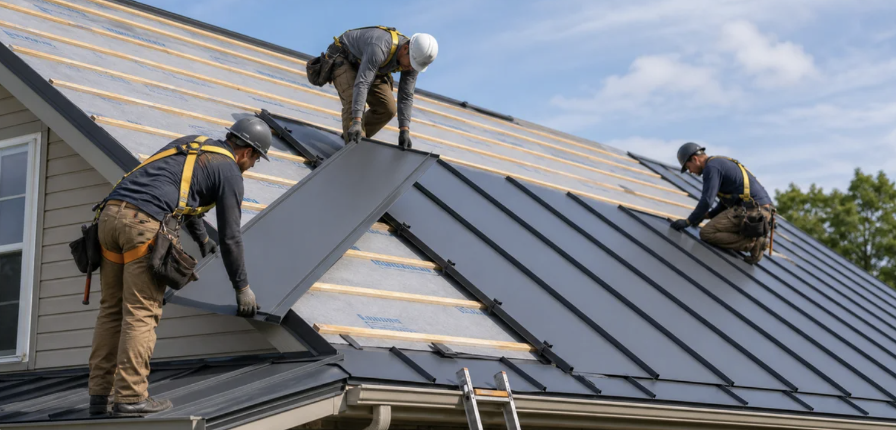

Metal Roofing Installation & Repair in Chiefland, Old Town, Trenton, and Newberry, Florida

Looking for reliable metal roofing in the Chiefland, Old Town, Trenton, or Newberry area? We specialize in durable, long-lasting metal roofs for homes, farms, barns, and commercial buildings across Dixie County, Levy County, Alachua County, and the surrounding north Florida region.
Get a Free Estimate – (352) 578-2988Why Choose a Metal Roof in North Florida?
North Florida’s climate — intense sun, heavy rain, high humidity, and occasional hurricanes or tropical storms — puts real stress on traditional roofs. Metal roofing is one of the best solutions for homes and properties in Chiefland, Old Town, Trenton, Newberry, and nearby communities.
A properly installed metal roof typically lasts 40–70 years or more with minimal maintenance. It reflects heat, which can lower cooling costs in Florida’s long summers. Metal is also highly resistant to wind uplift, fire, rot, insects, and mold.
Metal Roofing Services We Provide
- New metal roof installation for homes and commercial buildings
- Standing seam metal roofs
- Exposed fastener / corrugated metal roofing
- Metal roof repair and leak fixes
- Barns, sheds, shops, and agricultural buildings
Ready for a Metal Roof Quote?
Call today to schedule a free inspection and estimate.
Call (352) 578-2988